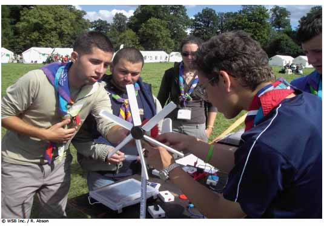

Debate energético

Finalidad 4
Scouts trabajan por un mundo donde se implementan las prácticas ambientales más apropiadas.
Objetivos educativos: Explicar cómo nuestra manera de actuar y la responsabilidad como individuos, grupo, comunidad o país puede afectar el ambiente. Comprender cómo podemos cambiar nuestras acciones para mejorar nuestro impacto en el ambiente. Demostrar como soluciones locales pueden impactar temas globales.Edad: Clan
Resumen: Un juego para pensar rápido para probar las habilidades de los Scout para pensar bajo presión y su poder de persuasión.
Objetivo: Pensar en problemas energéticos desde todos los puntos de vista.
Materiales y equipo: Cronómetro, silbato o campana.
Preparación: Ninguna.
Duración: Media hora.
Lugar: Local de grupo.
Antecedentes: Existen muchos problemas ambientales asociados con energía. Este juego requiere que los Scout piensen acerca de ellos desde todos los puntos de vista. Los participantes quizá tengan que discutir algún punto en el que no están de acuerdo y la verdadera habilidad de este juego es hacerlo de forma convincente.
Guía paso a paso de la actividad
1. Esta actividad asume que los Scout ya tienen algún conocimiento de los problemas relacionados con la producción y uso de energía. Quizá sea necesario hacer una actividad introductoria para recordar a los Scout qué saben ellos.2. Seleccione dos Scouts para competir en un debate y uno para que tome el tiempo. El resto de los Scout serán el jurado.
3. Dele a cada competidor uno de los tópicos adjuntos. Esto debería hacerse secretamente de manera que los competidores no sepan sobre el tópico de su oponente.
Dele a los competidores 30 segundos para pensar acerca de lo que van a decir. Luego deles 30 segundos para presentar su argumento. Después de que ambos hayan hablado por 30 segundos, déles 15 segundos para responder a lo que el otro competidor ha dicho.
Los jueces tendrán que decidir quién fue más convincente y declararlo el ganador. El ganador de cada debate es aquel que ha mostrado más habilidad para presentar su argumento.
Los jueces deben reservarse sus propias opiniones acerca del tópico y juzgar exclusivamente la habilidad para debatir de los participantes.
4. Repita el juego con otros dos Scout y continúe hasta que todos hayan participado. Los ganadores pueden competir entre ellos hasta que haya un campeón general. Si tiene muchos Scout, puede dividir el grupo en dos.
Tópicos para debate
- Carbón es maravillos versus Carbón es malo
- Amo la energía solar versus Odio la energía solar
- Pienso que los campos eólicos son espantosos versus Pienso que los campos eólicos son hermosos
- Calentamiento global es muy importante versus Calentamiento global no es muy importante
- Será bueno si las temperaturas aumentan versus Será malo si las temperaturas aumentan
- Energía solar es la mejor forma de energía versus Energía eólica es la mejor forma de energía
- Deberíamos usar energía nuclear versus No deberíamos usar energía nuclear
- Necesitamos reducir el consumo de energía versus No necesitamos reducir el consumo de energía
- Todos deberían saber cómo cultivar vegetables y alimentos básicos versus La producción de alimentos debería dejarse a los profesionales y campesinos
- Urbanización es buena versus Debería motivarse a la gente a quedarse en el campo
Y para calmar un poquito los ánimos, intente estos locos tópicos…
- Verde es el mejor color versus Rojo es el mejor color
- Bananas son las peores frutas versus Manzanas son las peores frutas
- Debería lavar solamente una vez a la semana versus Debería lavar todos los días
Evaluación
1. Al final de la competencia discuta los debates con los Scout. A continuación se presentan algunas ideas para discusión:
¿Cuáles tópicos fueron fáciles de debatir y cuáles difíciles?
¿Fue más fácil presentar el argumento cuando se sabía más sobre el tema?
¿Fue difícil argumentar en contra de las creencias personales?
¿Fue más fácil argumentar a favor de las creencias personales?
2. Piensen sobre los temas que salieron de los debates. Discuta con los Scout sus verdaderos sentimientos sobre la producción
y uso de energía. A continuación se presentan algunas ideas para discusión:
¿De dónde viene la energía?
¿Cómo impacta al ambiente la producción de energía?
¿Cómo puede producirse energía con menor impacto en el ambiente?
¿Qué pueden hacer los individuos para colaborar para que la producción de energía tenga menos impacto en el ambiente?
¿Cómo ahorrar energía en la vida diaria?
¿Qué están haciendo los Scout en la actualidad y qué quieren hacer en el futuro?
Actividades avanzadas
1. Visite una planta de energía renovable en su comunidad.
2. Fabriquen su propio artefacto que use energía renovable, por ejemplo, un horno solar, una turbina de viento o un molino de agua.
3. Investiguen cómo la energía se produce en su país. ¿Es esta renovable o no renovable?
4. Aprendan sobre los problemas ambientales asociados con el uso de energías no renovables, por ejemplo, cambio climático, contaminación del aire, disposición de desechos nucleares, contaminación del agua por minería, problemas asociados con plataformas petroleras en el mar, etc.
5. Decidan cómo su grupo Scout podría encontrar la mejor energía para todo el mundo. Imaginen que tienen control sobre todos los recursos de la Tierra. Piensen en las diferentes formas de crear energía, todas las cosas para las que necesitamos energía y todas las formas en las que podríamos ahorrar energía. Pueden hacer esta actividad como debate o como competencia.
© World Scout Bureau
Rue du Pré-Jérôme 5
PO Box 91
1211 Geneva 4 Plainpalais
Switzerland
Tel.: (+ 41 22) 705 10 10
Fax: (+ 41 22) 705 10 20
worldbureau@scout.org
scout.org
Reproduction is authorized to National Scout
Organizations and Associations which are
members of the World Organization of the Scout
Rue du Pré-Jérôme 5
PO Box 91
1211 Geneva 4 Plainpalais
Switzerland
Tel.: (+ 41 22) 705 10 10
Fax: (+ 41 22) 705 10 20
worldbureau@scout.org
scout.org
Reproduction is authorized to National Scout
Organizations and Associations which are
members of the World Organization of the Scout